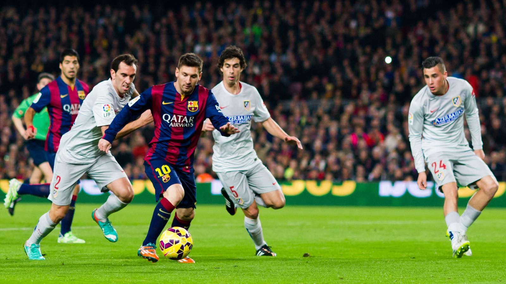

Футбол

Футбол - командный вид спорта, в котором целью является забить мяч в ворота соперника ногами или другими частями тела (кроме рук)
большее количество раз, чем команда соперника.
Есть 17 официальных правил игры, каждое из которых содержит список оговорок и руководящих принципов.
Эти правила предназначены для применения на всех уровнях футбола, хотя есть некоторые изменения для таких групп,
как юниоры, взрослые, женщины и люди с ограниченными физическими возможностями. Законы очень часто формулировались в общих чертах,
которые позволяют упростить их применения в зависимости от характера игры.